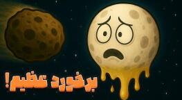

اگر سیارک ماه را بشکند و تکهاش به زمین بخورد چه میشود؟

اگر یک سیارک با ماه برخورد کند و ماه را از هم بپاشد، و بعد یک تکه بزرگش به زمین بخورد، آیا ما هم مثل دایناسورها از بین میرویم؟ این سؤالها را یکییکی جلو میبریم تا ببینیم زمین میماند یا نه.
برخورد سیارک با ماه
ماه جسم بزرگی است؛ قطرش حدود ۳۴۷۴ کیلومتر و جرمش نزدیک ۷٫۳۵ × ۱۰۲۲ کیلوگرم است. برای از هم پاشیدن ماه باید سیارکی خیلی بزرگ به آن بخورد.
فرض کن سیارکی به قطر ۵۰۰ کیلومتر با سرعت حدود ۲۰ کیلومتر بر ثانیه به ماه برخورد کند. شدت این برخورد را با انرژی جنبشی حساب میکنند: یک دوم جرم ضرب در مربع سرعت. اگر جرم سیارک را حدود ۱۰۱۹ کیلوگرم بگیریم، انرژی به حدود چند صد میلیارد مگاتن تیانتی میرسد.
بزرگترین بمب آزمایششده در تاریخ، بمب تزار ، حدود ۵۰ مگاتن بود. چند صد میلیارد مگاتن در برابر ۵۰ مگاتن اصلاً قابل مقایسه نیست. پس چنین سیارکی میتواند ماه را از هم بپاشد.
برخورد بقایای ماه با زمین
بعد از نابودی ماه، تکههای بزرگی در مدار زمین پخش میشوند. بعضی از آنها بهخاطر گرانش زمین به سمت سطح میافتند. فرض کنیم تکهای به قطر ۱۰ کیلومتر با سرعت حدود ۱۵ کیلومتر بر ثانیه وارد جو شود.
جرم چنین تکهای نزدیک ۱۰۱۵ کیلوگرم است. انرژی برخوردش حدود دو میلیون برابر بمب تزار میشود. این تکه میتواند دهانهای به قطر نزدیک ۱۰۰ کیلومتر و عمق چند کیلومتر بسازد.
گرد و غبار زیادی وارد جو میشود و جلوی نور خورشید را میگیرد. اگر تکهها در اقیانوس بیفتند، موجهایی به ارتفاع صدها متر شهرهای ساحلی را تهدید میکنند.
شهابسنگی که حدود ۶۶ میلیون سال پیش به زمین خورد و دورهٔ دایناسورها را عوض کرد، قطرش حدود ۱۰ تا ۱۵ کیلومتر بود. انرژی آن برخورد حدود ۱۰۲۳ ژول تخمین زده میشود و تقریباً هماندازهٔ همین تکه از ماه است.
زمین بدون ماه
اگر ماه از بین برود، تعادل زمین هم به هم میخورد. امروز محور زمین حدود ۲۳٫۵ درجه کج است و ماه کمک میکند این زاویه پایدار بماند. بدون ماه، گرانش مشتری و خورشید میتواند محور را بیشتر تکان بدهد.
تغییر محور یعنی زاویهٔ تابش خورشید به قطبها عوض میشود. یخهای قطبی ممکن است تندتر آب شوند و سطح دریا حتی تا دهها متر بالا بیاید. مناطقی که سرد بودند ممکن است گرمتر شوند و برعکس؛ مثلاً سیبری معتدلتر و گرینلند سبزتر.
ماه بیشتر جزر و مد زمین را میسازد. بدون آن، جزر و مد خیلی ضعیفتر و نامنظمتر میشود و زندگی بسیاری از موجودات دریایی عوض میگردد. ماه چرخش زمین را هم کند کرده؛ بدون ماه زمین تندتر میچرخد و روزها کوتاهتر میشوند. الگوهای آبوهوا هم به شدت تغییر میکنند.
از این ماجرا چه میماند؟
اگر زاویهٔ برخورد طوری باشد که تکههای بزرگ ماه از زمین دور شوند، شاید از برخورد مستقیم جان سالم به در ببریم. اما در نبود ماه، زمین با تغییرات بزرگی روبهرو میشود: از مدار و محور گرفته تا دریا و آبوهوا. زندگی دیگر مثل قبل نمیماند. این آزمایش فکری نشان میدهد ماه فقط یک چراغ شب نیست؛ یکی از تکیهگاههای آرامش زمین است. تا فکر بعدی، کنجکاو بمان.